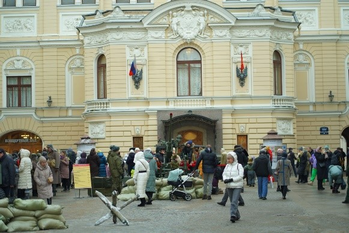
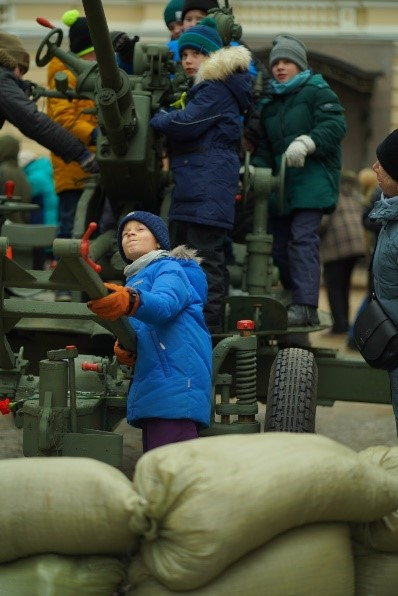

РЕГИОНАЛЬНАЯ ОБЩЕСТВЕННАЯ ОРГАНИЗАЦИЯ «ЦЕНТР СОДЕЙСТВИЯ СОЦИАЛЬНО-КУЛЬТУРНОМУ, ТВОРЧЕСКОМУ И СПОРТИВНО-ОЗДОРОВИТЕЛЬНОМУ РАЗВИТИЮ «НЕСТОР»
В 2024 году праздновалось 80-летие освобождения Ленинграда от фашистской блокады, поэтому молодежный патриотический проект «900 дней и ночей» имеет особую важность. 27 января 2024 года в Санкт-Петербурге прошли масштабные мероприятия, посвященные памятной дате. Среди них ежегодная молодежная патриотическая акция «900 дней и ночей» в Государственной академической капелле. В память о героическом подвиге жителей и солдат, защищавших наш город в годы Великой Отечественной войны, молодые петербуржцы создали живой мемориал во дворе капеллы Санкт-Петербурга. При участии Западного военного округа были выставлены единицы военной техники, артиллерийские орудия. Были организованы реконструкторские площадки и площадки поискового движения. Молодые ребята - участники общероссийского общественного объединения «Росрекон» демонстрировали предметы быта и оружие Великой Отечественной войны, звучали песни под аккордеон, кипел самовар, шли беседы о войне. Поисковые отряды «Рейд» показали свои находки с мест сражений, в их палатке всегда было много людей, которые задавали вопросы и хотели прикоснуться к живой истории. Рядом с построенным блиндажом расположилась полевая кухня и все смогли попробовать настоящую кашу с армейской тушенкой. Выступление фронтовой агитбригады «Музыка Победы» у легендарной полуторки, которая стала импровизированной сценой, не оставили никого равнодушным. Специально к памятной дате была организована выставочная зона «Деятели культуры и спорта во время блокады» совместно с Комитетом по физической культуре и спорту. В кинозале капеллы были показаны фильмы о блокаде, среди них фильм «Доноры блокадного Ленинграда». С 19 часов на фасаде капеллы был организован показ фильма «Ленинград в борьбе».
 Количество благополучателей: 3500 человек.
Количество волонтеров: 50 человек.